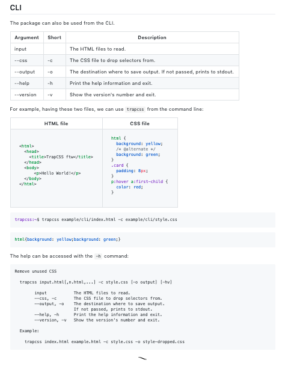

###! CLI Documentation
I want to let my users know how to use _TrapCSS_ from the *CLI*. Without _NodeTools_, I'd have to manually execute the binary, and copy-paste the help output into the README file. But we want to automate this process, to
- Save time taken to manually copy-paste data between terminal and documentation;
- Prevent documentation from becoming out-of-date when changes are made;
- Detect any errors if there were problems with the binary;
- Turn documentation into specification as our program will now always confirm to the published contract.
The template already included *documentary/2-CLI/index.md* file, but we want to build upon it a little bit, by giving a more precise example. We'll need to create *example/cli/index.html* and *example/cli/style.css* files with some input data:
```html
TrapCSS ftw
Hello World!
```
```css
/* example/cli/style.css */
html {
background: yellow;
/* @alternate */
background: green;
}
.card {
padding: 8px;
}
p:hover a:first-child {
color: red;
}
```
The updated CLI section of the documentation is pretty simple and includes a 2-column table that lists the examples, and the output. The table with arguments will also be included automatically by the ``argufy`` component that comes with _Documentary_:
We then give a console line of how to run our binary, and include the ``%FORK-css%`` marker, which means that the language of the output block will be CSS for syntax-highlighting on _GitHub_.

The README section is now compiled in the most automated way possible, leaving us time to work on implementation, testing and new feature design. Remember that we can run -p "doc cli" to keep _Documentary_ running in watch mode, and automatically push any changes upstream.